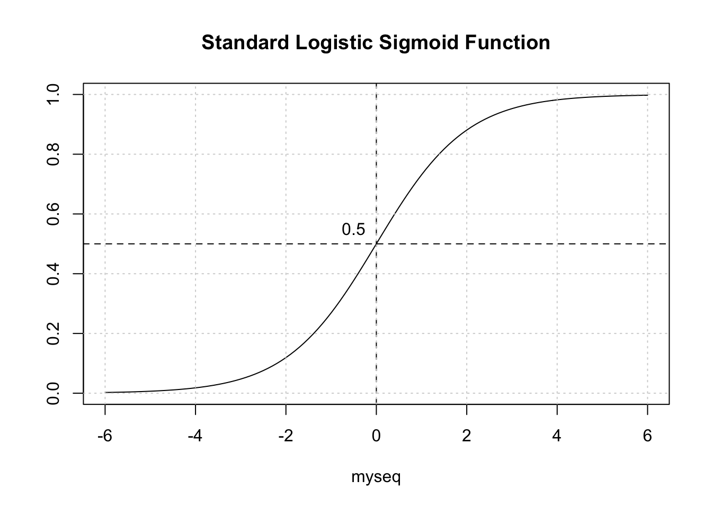
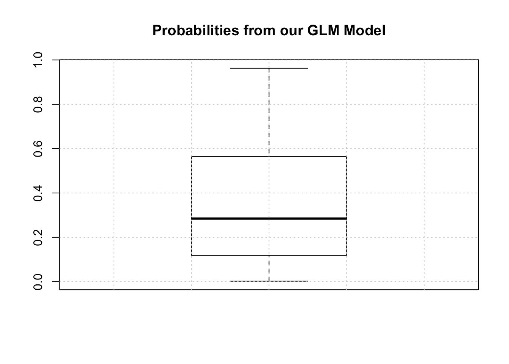
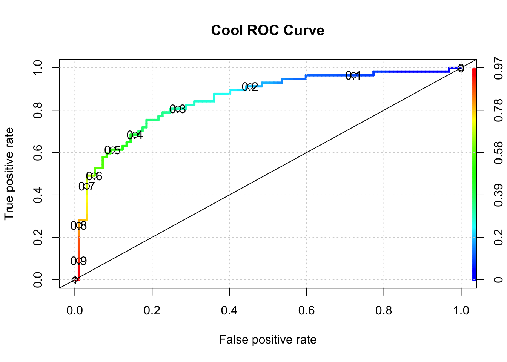

Chapter 4 Splitting The Data
A fundamental approach used in ML is to segment data into a “training” set which is some percentage of the original data - say 80%. The remaining 20% would be assigned to a “test” data set. Then we build a model on our training data set after which we use that model to predict outcomes for the test data set. This looks like the following.
Note that some scenarios will split the data into three data sets: 1) training, 2) validation, and 3) test. This scenario is used when tuning so called hyper parameters for methods that have “tuning” parameters that could influence the resulting model. We’ll stick with the basic “train / test” approach for now.
Splitting the data is not particularly challenging. We can use the built in sample function in R to do this. We aren’t sampling with replacement here which guarantees that no record can exist in both sets. That is, if a record from the data set is assigned to the training set, it will not be in the test data set.
# Make this example reproducible
set.seed(123)
percent <- .80
# Get the indices for a training set.
idx <- sample(1:nrow(pm),round(.8*nrow(pm)),F)
# Use bracket notation to create the train / test pair
train <- pm[idx,]
test <- pm[-idx,]
# The following should have 80 percent of the original
# data
round(nrow(train)/nrow(pm)*100)## [1] 804.1 First Model
Now let’s build a Generalized Linear Model to do the prediction. We will employ logistic regression.
myglm <- glm(diabetes ~ .,
data = train,
family = "binomial")
summary(myglm)##
## Call:
## glm(formula = diabetes ~ ., family = "binomial", data = train)
##
## Deviance Residuals:
## Min 1Q Median 3Q Max
## -2.3941 -0.7235 -0.4285 0.7476 3.0031
##
## Coefficients:
## Estimate Std. Error z value Pr(>|z|)
## (Intercept) -8.2308564 0.7816436 -10.530 < 2e-16 ***
## pregnant 0.1138202 0.0366475 3.106 0.00190 **
## glucose 0.0366854 0.0041947 8.746 < 2e-16 ***
## pressure -0.0131360 0.0059415 -2.211 0.02704 *
## triceps -0.0006303 0.0075466 -0.084 0.93343
## insulin -0.0017394 0.0009826 -1.770 0.07667 .
## mass 0.0847273 0.0161080 5.260 1.44e-07 ***
## pedigree 0.9057850 0.3329203 2.721 0.00651 **
## age 0.0120925 0.0107367 1.126 0.26005
## ---
## Signif. codes: 0 '***' 0.001 '**' 0.01 '*' 0.05 '.' 0.1 ' ' 1
##
## (Dispersion parameter for binomial family taken to be 1)
##
## Null deviance: 790.13 on 613 degrees of freedom
## Residual deviance: 581.40 on 605 degrees of freedom
## AIC: 599.4
##
## Number of Fisher Scoring iterations: 5In looking at the output we see some problems such as a number of predictors aren’t significant so maybe we should eliminate them from the model. For now, we’ll keep going because we are trying to outline the larger process / workflow.
4.2 First Prediction
We could now use this new model to predict outcomes using the test data set. Remember that we are attempting to predict a binary outcome - in this case whether the person is positive for diabetes or negative.
What we get back from the prediction object are probabilities for which we have to determine a threshold above which we would say the observation is “positive” for diabetes and, below the threshold, “negative”.
probs <- predict(myglm,
newdata = test,
type = "response")
probs[1:10]## 2 3 9 12 13 17 18
## 0.0503311 0.8208652 0.6680994 0.9016430 0.7766679 0.3361188 0.2029466
## 23 25 31
## 0.9453408 0.6693923 0.4026717With logistic regression we are dealing with a curve like the one below which is a sigmoid function. The idea is to take our probabilities, which range between 0 and 1, and then pick a threshold over which we would classify that person as being positive for diabetes.

4.2.1 Selecting The Correct Alpha
The temptation is to select 0.5 as the threshold such that if a returned probability exceeds 0.5 then we classify the associated subject as being “positive” for the disease. But then this assumes that the probabilities are distributed accordingly. This is frequently not the case though it doesn’t stop people from using 0.5.
We might first wish to look at the distribution of the returned probabilities before making a decision about where to set the threshold. We can see clearly that selecting 0.5 in this case would not be appropriate.
boxplot(probs,
main="Probabilities from our GLM Model")
grid()
The median is somewhere around .25 so we could use that for now although we are just guessing.
mypreds <- ifelse(probs > 0.25,"pos","neg")
mypreds <- factor(mypreds, levels = levels(test[["diabetes"]]))
mypreds[1:10]## 2 3 9 12 13 17 18 23 25 31
## neg pos pos pos pos pos neg pos pos pos
## Levels: neg pos4.2.2 Confusion Matrices
Next, we would compare our predictions against the known outcomes which are stored in the test data frame:
# How does this compare to the truth ?
table(predicted = mypreds,
actual = test$diabetes)## actual
## predicted neg pos
## neg 60 7
## pos 37 50What we are doing is building a “Confusion Matrix” which can help us determine how effective our model is. From such a matrix table we can compute a number of “performance measures”, such as accuracy, precision, sensitivity, specificity and others, to help assess the quality of the model. In predictive modeling we are always interested in how well any given model will perform on “new” data.
There are some functions that can help us compute a confusion matrix. Because the variable we are trying to predict, (diabetes), is a two level factor, (“neg” or “pos”) we’ll need to turn our predictions into a comparable factor. Right now, it’s just a character string.
# test$diabetes <- ordered(test$diabetes,c("pos","neg"))
mypreds <- factor(mypreds,
levels=levels(test$diabetes))
caret::confusionMatrix(mypreds,test$diabetes,positive="pos")## Confusion Matrix and Statistics
##
## Reference
## Prediction neg pos
## neg 60 7
## pos 37 50
##
## Accuracy : 0.7143
## 95% CI : (0.636, 0.7841)
## No Information Rate : 0.6299
## P-Value [Acc > NIR] : 0.01718
##
## Kappa : 0.4472
##
## Mcnemar's Test P-Value : 1.232e-05
##
## Sensitivity : 0.8772
## Specificity : 0.6186
## Pos Pred Value : 0.5747
## Neg Pred Value : 0.8955
## Prevalence : 0.3701
## Detection Rate : 0.3247
## Detection Prevalence : 0.5649
## Balanced Accuracy : 0.7479
##
## 'Positive' Class : pos
## 4.3 Performance Measures
This is helpful stuff although there are a number of measures to select as a primary performance metric. Ideally, we would already know which performance metric we would select to effectively “judge” the quality of our model. In medical tests, “sensitivity” and “specificity” are commonly used. Some applications use “Accuracy” (which isn’t good when there is large group imbalance). Anyway, if, for example, we pick “sensitivity” as a judge of model quality we see that is somewhere around .87. (A much deeper discussion about selecting the best performance measure is in order but we’ll keep moving for mow)
The problem here is that all we have done is looked at the confusion matrix corresponding to one specific (and arbitrary) threshold value when what we need is to look at a number of confusion matrices corresponding to many different thresholds. For example, we might get a better sensitivity level had we selected the mean of the returned probabilities. This process could go on and on and on… So we would benefit from a rigorous approach to find the “best” threshold.
4.4 The ROC curve
One way to do this is to use something known as the ROC curve. Luckily, R has functions to do this. This isn’t surprising as it is a standard tool that has been in use for decades long before the hype of AI and ML was around. The ROC curve gives us a “one stop shop” for estimating a value of alpha that results in maximal area under a curve.
In fact, maximizing the area under a given ROC curve winds up being an effective way to judge the differences between one method and another. So, if we wanted to compare the glm model against a Support Vector Machine model, we could use the respective AUC (Area Under Curve) metric to help us. This isn’t the only way to do this but it’s reasonable for now.
pred <- ROCR::prediction(predictions = probs,
labels = test$diabetes)
perf <- performance(pred,
"tpr",
"fpr")
plot(perf,colorize=T,
print.cutoffs.at=seq(0,1,by=0.1),
lwd=3,las=1,main="Cool ROC Curve")
abline(a = 0, b = 1)
grid()
myroc <- performance(pred,measure="auc")
myroc@y.values[[1]]## [1] 0.8507868So what value of alpha corresponds to the stated max AUC of .80 ? We’ll have to dig into the performance object to get that but it looks to be between 0.30 and 0.40. Note that this is somewhat academic since knowing the max AUC alone helps us decide if our model is any “good”. For completeness we could use another R function to nail this down:
library(pROC)
proc <- roc(test$diabetes,probs)
round(coords(proc, "b", ret="t", transpose = FALSE),2)## [1] 0.35